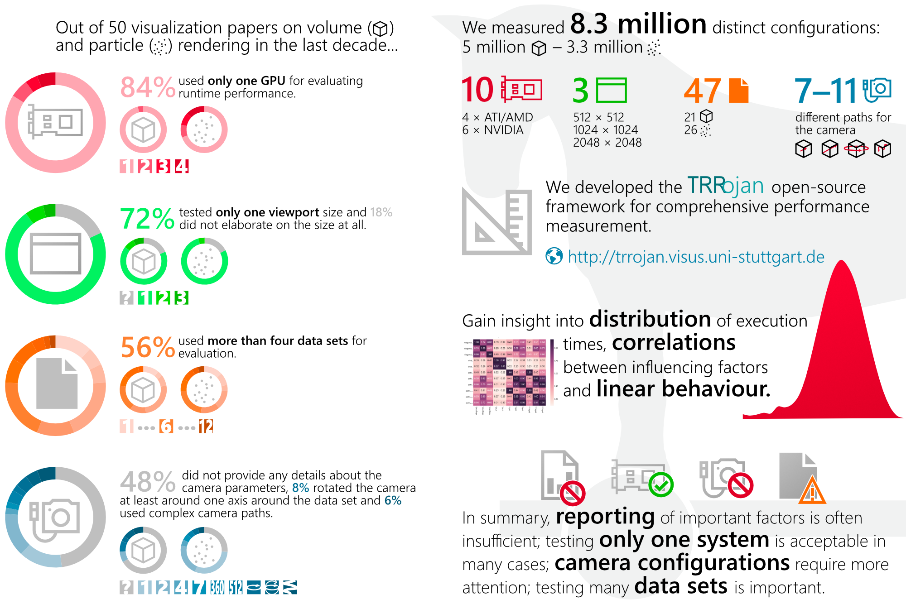
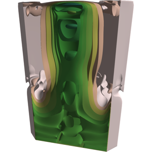
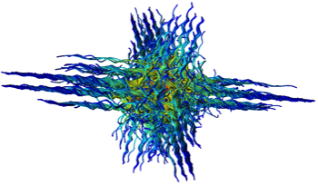

Steffen Frey
Room 456
Nijenborgh 9 (Bernoulliborg)
9747 AG Groningen
Netherlands
Nijenborgh 9 (Bernoulliborg)
9747 AG Groningen
Netherlands
My research concerns the development of methods to gain insights from large quantities of data, addressing both cognitive and technical limitations. This involves different directions of research which are tightly connected, including machine learning /optimization, high performance visualization (distributed/parallel approaches, in situ visualization), and multifield visualization.
2020
Foveated Encoding for Large High-Resolution Displays
F. Frieß, M. Braun, V. Bruder, S. Frey, G. Reina, T. Ertl
Collaborative exploration of scientific data sets across large high-resolution displays requires both high visual detail as well as low-latency transfer of image data (oftentimes inducing the need to trade one for the other). In this work, we present a system that dynamically adapts the encoding quality in such systems in a way that reduces the required bandwidth without impacting the details perceived by one or more observers. Humans perceive sharp, colourful details, in the small foveal region around the centre of the field of view, while information in the periphery is perceived blurred and colourless. We account for this by tracking the gaze of observers, and respectively adapting the quality parameter of each macroblock used by the H.264 encoder, considering the so-called visual acuity fall-off. This allows to substantially reduce the required bandwidth with barely noticeable changes in visual quality, which is crucial for collaborative analysis across display walls at different locations. We demonstrate the reduced overall required bandwidth and the high quality inside the foveated regions using particle rendering and parallel coordinates.
Temporally Dense Exploration of Moving and Deforming Shapes
S. Frey
We present our approach for the dense visualization and temporal exploration of moving and deforming shapes from scientific experiments and simulations. Our image space representation is created by convolving a noise texture along shape contours (akin to LIC). Beyond indicating spatial structure via luminosity, we additionally use colour to depict time or classes of shapes via automatically customized maps. This representation summarizes temporal evolution, and provides the basis for interactive user navigation in the spatial and temporal domain in combination with traditional renderings. Our efficient implementation supports the quick and progressive generation of our representation in parallel as well as adaptive temporal splits to reduce overlap. We discuss and demonstrate the utility of our approach using 2D and 3D scalar fields from experiments and simulations.
Trade-offs and Parameter Adaptation in In Situ Visualization
S. Frey, V. Bruder, F. Frieß, P. Gralka, T. Rau, T. Ertl, G. Reina
Chapter in the book In Situ Visualization for Computational Science (Publisher: Springer)
This chapter discusses trade-offs and parameter tuning in in situ visualization, with an emphasis on rendering quality and workload distribution.
Four different use cases are analyzed with respect to the characteristics of configuration changes, and the design as well as dynamic adaptation choices following from this. First, the performance impact of load balancing and resource allocation variants on the simulation and the visualization is investigated using the visualization framework MegaMol. Its loose coupling scheme and architecture enable minimally invasive in situ operation without impacting the stability of the simulation with (potentially) experimental visualization code. Second, Volumetric Depth Images (VDIs) are considered: a compact, view-dependent intermediate representation that can efficiently be generated and used for a posteriori exploration. A study of their inherent trade-offs regarding size, quality, and generation time provides the basis for parameter optimization. Third, streaming for remote visualization allows a user to monitor the progress of the simulation and to steer visualization parameters. Compression settings are adapted dynamically based on predictions via convolutional neural networks across different parts of images to achieve high frame rates for high-resolution displays like powerwalls. Fourth, different performance prediction models for volume rendering address offline scenarios (like hardware acquisition planning) as well as dynamic adaptation of parameters and load balancing. Finally, the chapter concludes by summarizing overarching approaches and challenges, and discussing the potential role that adaptive approaches can play in increasing the efficiency of in situ visualization.

Visual Analysis of Structure Formation in Cosmic Evolution
K. Schatz, C. Müller, P. Gralka, M. Heinemann, A. Straub, C. Schulz, M. Braun, T. Rau, M. Becher,
P. Diehl, D. Marcello, J. Frank, T. Müller, S. Frey, G. Reina, D. Weiskopf, T. Ertl
P. Diehl, D. Marcello, J. Frank, T. Müller, S. Frey, G. Reina, D. Weiskopf, T. Ertl
The IEEE SciVis 2019 Contest targets the visual analysis of structure formation in the cosmic evolution of the universe from when the universe was five million years old up to now. In our submission, we analyze high-dimensional data to get an overview, then investigate the impact of Active Galactic Nuclei (AGNs) using various visualization techniques, for instance, an adapted filament filtering method for detailed analysis and particle flow in the vicinity of filaments. Based on feedback from domain scientists on these initial visualizations, we also analyzed X-ray emissions and star formation areas. The conversion of star-forming gas to stars and the resulting increasing molecular weight of the particles could be observed.
Datenmanagement im SFB 1313
S. Hermann, M. Schneider, B. Flemisch, S. Frey, D. Iglezakis, M. Ruf, B. Schembera, A. Seeland, H. Steeb
Dieser Artikel gibt einen Überblick über das Forschungsdatenmanagement im SFB 1313. Ein wesentliches Merkmal der geplanten Forschungstätigkeit im SFB ist die Verknüpfung von physikalischen und mathematischen Modellen und den daraus resultierenden Rechenmodellen mit hochaufgelösten Experimenten. Eine solche Verknüpfung stellt diverse Anforderungen an das Forschungsdatenmanagement. Diese Anforderungen sowie die damit einhergehenden Herausforderungen werden in diesem Artikel detailliert beschrieben. In diesem Zusammenhang wird das Datenrepositorium DaRUS vorgestellt, welches die Verwaltung und Beschreibung der im SFB anfallenden Daten ermöglicht. Zusätzlich wird das entwickelte Metadatenschema vorgestellt und auf die geplante automatisierte Metadatenerfassung eingegangen.
2019
Local Prediction Models for Spatiotemporal Volume Visualization
G. Tkachev, S. Frey, T. Ertl
We present a machine learning-based approach for detecting and visualizing complex behavior in spatiotemporal volumes. For this, we train models to predict future data values at a given position based on the past values in its neighborhood, capturing common temporal behavior in the data. We then evaluate the model’s prediction on the same data. High prediction error means that the local behavior was too complex, unique or uncertain to be accurately captured during training, indicating spatiotemporal regions with interesting behavior. By training several models of varying capacity, we are able to detect spatiotemporal regions of various complexities. We aggregate the obtained prediction errors into a time series or spatial volumes and visualize them together to highlight regions of unpredictable behavior and how they differ between the models. We demonstrate two further volumetric applications: adaptive timestep selection and analysis of ensemble dissimilarity. We apply our technique to datasets from multiple application domains and demonstrate that we are able to produce meaningful results while making minimal assumptions about the underlying data.
The Impact of Work Distribution on In Situ Visualization: A Case Study
T. Rau, P. Gralka, O. Fernandes, G. Reina, S. Frey, T. Ertl
ISAV 2019 | honorable mention
Large-scale computer simulations generate data at rates that necessitate visual analysis tools to run in situ. The distribution of work on and across nodes of a supercomputer is crucial to utilize compute resources as efficiently as possible. In this paper, we study two work distribution problems in the context of in situ visualization and jointly assess the performance impact of different variants. First, especially for simulations involving heterogeneous loads across their domain, dynamic load balancing can significantly reduce simulation run times. However, the adjustment of the domain partitioning associated with this also has a direct impact on visualization performance. The exact impact of this is side effect is largely unclear a priori as generally different criteria are used for balancing simulation and visualization load. Second, on node level, the adequate allocation of threads to simulation or visualization tasks minimizes the performance drain of the simulation while also enabling timely visualization results. In our case study, we jointly study both work distribution aspects with the visualization framework MegaMol coupled in situ on node level to the molecular dynamics simulation ls1 Mardyn on Stampede2 at TACC.
Visual Representation of Region Transitions in Multi-dimensional Parameter Spaces
O. Fernandes, S. Frey, G. Reina, T. Ertl
We propose a novel visual representation of transitions between homogeneous regions in multi-dimensional parameter space.
While our approach is generally applicable for the analysis of arbitrary continuous parameter spaces, we particularly focus on scientific applications, like physical variables in simulation ensembles.
To generate our representation, we use unsupervised learning to cluster the ensemble members according to their mutual similarity.
In doing this, clusters are sorted such that similar clusters are located next to each other.
We then further partition the clusters into connected regions with respect to their location in parameter space.
In the visualization, the resulting regions are represented as glyphs in a matrix, indicating parameter changes which induce a transition to another region.
To unambiguously associate a change of data characteristics to a single parameter, we specifically isolate changes by dimension.
With this, our representation provides an intuitive visualization of the parameter transitions that influence the outcome of the underlying simulation or measurement.
We demonstrate the generality and utility of our approach on diverse types of data, namely simulations from the field of computational fluid dynamics and thermodynamics, as well as an ensemble of raycasting performance data.
Voronoi-Based Foveated Volume Rendering
V. Bruder, C. Schulz, R. Bauer, S. Frey, D. Weiskopf, T. Ertl
EuroVis 2019 | best short paper
Foveal vision is located in the center of the field of view with a rich impression of detail and color, whereas peripheral vision occurs on the side with more fuzzy and colorless perception. This visual acuity fall-off can be used to achieve higher frame rates by adapting rendering quality to the human visual system. Volume raycasting has unique characteristics, preventing a direct transfer of many traditional foveated rendering techniques. We present an approach that utilizes the visual acuity fall-off to accelerate volume rendering based on Linde-Buzo-Gray sampling and natural neighbor interpolation. First, we measure gaze using a stationary 1200Hz eye-tracking system. Then, we adapt our sampling and reconstruction strategy to that gaze. Finally, we apply a temporal smoothing filter to attenuate undersampling artifacts since peripheral vision is particularly sensitive to contrast changes and movement. Our approach substantially improves rendering performance with barely perceptible changes in visual quality.
Space-Time Volume Visualization of Gaze and Stimulus
V. Bruder, K. Kurzhals, S. Frey, D. Weiskopf, T. Ertl
We present an approach for the spatio-temporal analysis of gaze data from multiple participants in the context of a video stimulus. For such data, an overview of the recorded patterns is important to identify common viewing behavior (such as attentional synchrony) and outliers. We adopt the approach of a space-time cube visualization, which extends the spatial dimensions of the stimulus by time as the third dimension. Previous work mainly handled eye-tracking data in the space-time cube as point cloud, providing no information about the stimulus context. This paper presents a novel visualization technique that combines gaze data, a dynamic stimulus, and optical flow with volume rendering to derive an overview of the data with contextual information. With specifically designed transfer functions, we emphasize different data aspects, making the visualization suitable for explorative analysis and for illustrative support of statistical findings alike.

On Evaluating Runtime Performance of Interactive Visualizations
V. Bruder, C. Müller, S. Frey, T. Ertl
As our field matures, evaluation of visualization techniques has extended from reporting runtime performance to studying user behavior. Consequently, many methodologies and best practices for user studies have evolved. While maintaining interactivity continues to be crucial for the exploration of large data sets, no similar methodological foundation for evaluating runtime performance has been developed. Our analysis of 50 recent visualization papers on new or improved techniques for rendering volumes or particles indicates that only a very limited set of parameters like different data sets, camera paths, viewport sizes, and GPUs are investigated, which make comparison with other techniques or generalization to other parameter ranges at least questionable. To derive a deeper understanding of qualitative runtime behavior and quantitative parameter dependencies, we developed a framework for the most exhaustive performance evaluation of volume and particle visualization techniques that we are aware of, including millions of measurements on ten different GPUs. This paper reports on our insights from statistical analysis of this data, discussing independent and linear parameter behavior and non-obvious effects. We give recommendations for best practices when evaluating runtime performance of scientific visualization applications, which can serve as a starting point for more elaborate models of performance quantification.
Hybrid image processing approach for autonomous crack area detection and tracking using local digital image correlation results applied to single-fiber interfacial debonding
I. Tabiai, G. Tkachev, P. Diehl, S. Frey, T. Ertl, D. Therriault, M. Lévesque
Local digital image correlation is a popular method for accurate full field displacement measurements. However, the technique struggles at autonomously tracking emerging and propagating cracks. We proposed a hybrid approach which utilizes image processing techniques in combination with local digital image correlation to autonomously monitor cracks in a mechanically loaded specimen. Our approach can extract and track crack surfaces and provide a volume-based visualization of the crack growth. This approach was applied to single-fiber composite experimental results with interfacial debonding from the literature. Results quantitatively show that strong interfacial fiber/matrix bonding leads to slower interfacial crack growth, delays interfacial crack growth in the matrix, requires higher loadings for crack growth and shows a specific crack path distinct from the one obtained for weak interfaces. The approach was also validated against a manual approach where a domain scientist extracts a crack using a polygon extraction tool. The method can be used on any local digital image correlation results involving damage observations.
2018
Adaptive Encoder Settings for Interactive Remote Visualisation on High-Resolution Displays
F. Frieß, M. Landwehr, V. Bruder, S. Frey, T. Ertl
We present an approach that dynamically adapts encoder settings for image tiles to yield the best possible quality for a given bandwidth. This reduces the overall size of the image while preserving details. Our application determines the encoding settings in two steps. In the first step, we predict the quality and size of the tiles for different encoding settings using a convolutional neural network. In the second step, we assign the optimal encoder setting to each tile, so that the overall size of the image is lower than a predetermined threshold. Commonly, for tiles that contain complicated structures, a high quality setting is used in order to prevent major information loss, while quality settings are lowered for others to keep the size below the threshold. We demonstrate that we can reduce the overall size of the image while preserving the details in areas of interest using the example of both particle and volume visualisation applications.

Visualization of Bubble Formation in Porous Media
H. Zhang, S. Frey, H. Steeb, D. Uribe, T. Ertl, W. Wang
We present a visualization approach for the analysis of CO2 bubble-induced attenuation in porous rock formations. As a basis for this, we introduce customized techniques to extract CO2 bubbles and their surrounding porous structure from X-ray computed tomography data (XCT) measurements. To understand how the structure of porous media influences the occurrence and the shape of formed bubbles, we automatically classify and relate them in terms of morphology and geometric features, and further directly support searching for promising porous structures. To allow for the meaningful direct visual comparison of bubbles and their structures, we propose a customized registration technique considering the bubble shape as well as its points of contact with the porous media surface. With our quantitative extraction of geometric bubble features, we further support the analysis as well as the creation of a physical model. We demonstrate that our approach was successfully used to answer several research questions in the domain, and discuss its high practical relevance to identify critical seismic characteristics of fluid-saturated rock that govern its capability to store CO2.
Spatio-Temporal Contours from Deep Volume Raycasting
S. Frey
We visualize contours for spatio-temporal processes to indicate where and when non-continuous changes occur or spatial bounds are encountered. All time steps are comprised densely in one visualization, with contours allowing to efficiently analyze processes in the data even in case of spatial or temporal overlap. Contours are determined on the basis of deep raycasting that collects samples across time and depth along each ray. For each sample along a ray, its closest neighbors from adjacent rays are identified, considering time, depth, and value in the process. Large distances are represented as contours in image space, using color to indicate temporal occurrence. This contour representation can easily be combined with volume rendering-based techniques, providing both full spatial detail for individual time steps and an outline of the whole time series in one view. Our view-dependent technique supports efficient progressive computation, and requires no prior assumptions regarding the shape or nature of processes in the data. We discuss and demonstrate the performance and utility of our approach via a variety of data sets, comparison and combination with an alternative technique, and feedback by a domain scientist.
Volume-based Large Dynamic Graph Analytics
V. Bruder, M. Hlawatsch, S. Frey, M. Burch, D. Weiskopf, T. Ertl
IV 2018 | Best Paper
We present an approach for interactively analyzing large dynamic graphs consisting of several thousand time steps, with a particular focus on temporal aspects. We employ a static representation of the time-varying graph based on the concept of space-time cubes, i.e., we create a volumetric representation of the graph by stacking the adjacency matrices of each of its time steps. To achieve an efficient analysis of this complex data, we discuss three classes of analytics methods of particular importance in this context: data views, aggregation and filtering, and comparison. For these classes, we provide respective analysis techniques, with our GPU-based implementation enabling the interactive analysis of large graphs. We demonstrate the utility as well as the scalability of our approach by presenting application examples for analyzing different time-varying data sets.
2017
Sampling and Estimation of Pairwise Similarity in Spatio-Temporal Data Based on Neural Networks
S. Frey
Increasingly fast computing systems for simulations and high-accuracy measurement techniques drive the generation of time-dependent volumetric data sets with high resolution in both time and space. To gain insights from this spatio-temporal data, the computation and direct visualization of pairwise distances between time steps not only supports interactive user exploration, but also drives automatic analysis techniques like the generation of a meaningful static overview visualization, the identification of rare events, or the visual analysis of recurrent processes. However, the computation of pairwise differences between all time steps is prohibitively expensive for large-scale data not only due to the significant cost of computing expressive distance between high-resolution spatial data, but in particular owing to the large number of distance computations (O(|T|2)), with |T| being the number of time steps). Addressing this issue, we present and evaluate different strategies for the progressive computation of similarity information in a time series, as well as an approach for estimating distance information that has not been determined so far. In particular, we investigate and analyze the utility of using neural networks for estimating pairwise distances. On this basis, our approach automatically determines the sampling strategy yielding the best result in combination with trained networks for estimation.
Prediction-Based Load Balancing and Resolution Tuning for Interactive Volume Raycasting
V. Bruder, S. Frey, T. Ertl
Visual Informatics
We present an integrated approach for real-time performance prediction of volume raycasting that we employ for load balancing and sampling resolution tuning. In volume rendering, the usage of acceleration techniques such as empty space skipping and early ray termination, among others, can cause significant variations in rendering performance when users adjust the camera configuration or transfer function. These variations in rendering times may result in unpleasant effects such as jerky motions or abruptly reduced responsiveness during interactive exploration. To avoid those effects, we propose an integrated approach to adapt rendering parameters according to performance needs. We assess performance-relevant data on-the-fly, for which we propose a novel technique to estimate the impact of early ray termination. On the basis of this data, we introduce a hybrid model, to achieve accurate predictions with minimal computational footprint. Our hybrid model incorporates aspects from analytical performance modeling and machine learning, with the goal to combine their respective strengths. We show the applicability of our prediction model for two different use cases: (1) to dynamically steer the sampling density in object and/or image space and (2) to dynamically distribute the workload among several different parallel computing devices. Our approach allows the renderer to reliably meet performance requirements such as a user-defined frame rate, even in the case of sudden large changes to the transfer function or camera orientation.
Power Efficiency of Volume Raycasting on Mobile Devices
M. Heinemann, V. Bruder, S. Frey, T. Ertl
EuroVis 2017 - Posters
Power efficiency is one of the most important factors for the development of compute-intensive applications in the mobile domain. In this work, we evaluate and discuss the power consumption of a direct volume rendering app based on raycasting on a mobile system. For this, we investigate the influence of a broad set of algorithmic parameters, which are relevant for performance and rendering quality, on the energy usage of the system. Additionally, we compare an OpenCL implementation to a variant using OpenGL. By means of a variety of examples, we demonstrate that numerous factors can have a significant impact on power consumption. In particular, we also discuss the underlying reasons for the respective effects.
Visualization of fracture progression in peridynamics
M. Bußler, P. Diehl, D. Pflüger, S. Frey, F. Sadlo, T. Ertl, M. A. Schweitzer
Computers & Graphics
We present a novel approach for the visualization of fracture processes in peridynamics simulations. In peridynamics simulation, materials are represented by material points linked with bonds, providing complex fracture behavior. Our approach first extracts the cracks from each time step by means of height ridge extraction. To avoid deterioration of the structures, we propose an approach to extract ridges from these data without resampling. The extracted crack geometries are then combined into a spatiotemporal structure, with special focus on temporal coherence and robustness. We then show how this structure can be used for various visualization approaches to reveal fracture dynamics, with a focus on physical mechanisms. We evaluate our approach and demonstrate its utility by means of different data sets.
Prediction of Distributed Volume Visualization Performance to Support Render Hardware Acquisition
G.Tkachev, S.Frey, C.Müller, V.Bruder, T.Ertl
Eurographics Symposium on Parallel Graphics and Visualization (EGPGV) 2017
We present our data-driven, neural network-based approach to predicting the performance of a distributed GPU volume renderer for supporting cluster equipment acquisition. On the basis of timing measurements from a single cluster as well as from individual GPUs, we are able to predict the performance gain of upgrading an existing cluster with additional or faster GPUs, or even purchasing of a new cluster with a comparable network configuration. To achieve this, we employ neural networks to capture complex performance characteristics. However, merely relying on them for the prediction would require the collection of training data on multiple clusters with different hardware, which is impractical in most cases. Therefore, we propose a two-level approach to prediction, distinguishing between node and cluster level. On the node level, we generate performance histograms on individual nodes to capture local rendering performance. These performance histograms are then used to emulate the performance of different rendering hardware for cluster-level measurement runs. Crucially, this variety allows the neural network to capture the compositing performance of a cluster separately from the rendering performance on individual nodes. Therefore, we just need a performance histogram of the GPU of interest to generate a prediction. We demonstrate the utility of our approach using different cluster configurations as well as a range of image and volume resolutions.
Fast Flow-based Distance Quantification and Interpolation for High-Resolution Density Distributions
S. Frey, T. Ertl
EuroGraphics 2017, Short Paper
(also presented at NVIDIA GTC 2017)
(also presented at NVIDIA GTC 2017)
We present a GPU-targeted algorithm for the efficient direct computation of distances and interpolates between high-resolution density distributions without requiring any kind of intermediate representation like features. It is based on a previously published multi-core approach, and substantially improves its performance already on the same CPU hardware due to algorithmic improvements. As we explicitly target a manycore-friendly algorithm design, we further achieve significant speedups by running on a GPU. This paper quickly reviews the previous approach, and explicitly discusses the analysis of algorithmic characteristics as well as hardware architectural considerations on which our redesign was based. We demonstrate the performance and results of our technique by means of several transitions between volume data sets.
Spline-based Decomposition of Streamed Particle Trajectories for Efficient Transfer and Analysis Conversion
K. Scharnowski, S. Frey, B. Raffin, T. Ertl
EuroVis 2017, Short Paper
We introduce an approach for distributed processing and efficient storage of noisy particle trajectories, and present visual analysis techniques that directly operate on the generated representation. For efficient storage, we decompose individual trajectories into a smooth representation and a high frequency part. Our smooth representation is generated by fitting Hermite Splines to a series of time windows, adhering to a certain error bound. This directly supports scenarios involving in situ and streaming data processing. We show how the individually fitted splines can afterwards be combined into one spline posessing the same mathematical properties, i.e. C1 continuity as well as our error bound. The fitted splines are typically significantly smaller than the original data, and can therefore be used, e.g., for an online monitoring and analysis of distributed particle simulations. The high frequency part can be used to reconstruct the original data, or could also be discarded in scenarios with limited storage capabilities. Finally, we demonstrate the utility of our smooth representation for different analysis queries using real world data.

Transportation-based Visualization of Energy Conversion
O. Fernandes, S. Frey, T. Ertl
IVAPP 2017
We present a novel technique to visualize the transport of and conversion between internal and kinetic energy in compressible flow data. While the distribution of energy can be directly derived from flow state variables (e.g., velocity, pressure and temperature) for each time step individually, there is no information regarding the involved transportation and conversion processes. To visualize these, we model the energy transportation problem as a graph that can be solved by a minimum cost flow algorithm, inherently respecting energy conservation. In doing this, we explicitly consider various simulation parameters like boundary conditions and energy transport mechanisms. Based on the resulting flux, we then derive a local measure for the conversion between energy forms using the distribution of internal and kinetic energy. To examine this data, we employ different visual mapping techniques that are specifically targeted towards different research questions. In particular, we introduce glyphs for visualizing local energy transport, which we place adaptively based on conversion rates to mitigate issues due to clutter and occlusion.
Progressive Direct Volume-to-Volume Transformation
S. Frey, T. Ertl
TVCG (VIS 2016 paper)
We present a novel technique to generate transformations between arbitrary volumes, providing both expressive distances and smooth interpolates. In contrast to conventional morphing or warping approaches, our technique requires no user guidance, intermediate representations (like extracted features), or blending, and imposes no restrictions regarding shape or structure. Our technique operates directly on the volumetric data representation, and while linear programming approaches could solve the underlying problem optimally, their polynomial complexity makes them infeasible for high-resolution volumes. We therefore propose a progressive refinement approach designed for parallel execution that is able to quickly deliver approximate results that are iteratively improved toward the optimum. On this basis, we further present a new approach for the streaming selection of time steps in temporal data that allows for the reconstruction of the full sequence with a user-specified error bound.
2016
Generative Data Models for Validation and Evaluation of Visualization Techniques
C. Schulz, Christoph and A. Nocaj, M. El-Assady, S. Frey, M. Hlawatsch, M. Hund, G. Karch, R. Netzel, C. Schätzle, M. Butt, D. Keim, T. Ertl, U. Brandes, D. Weiskopf
BELIV '16: Beyond Time And Errors: Novel Evaluation Methods For Visualization
We argue that there is a need for substantially more research on the use of generative data models in the validation and evaluation of visualization techniques. For example, user studies will require the display of representative and uncon- founded visual stimuli, while algorithms will need functional coverage and assessable benchmarks. However, data is often collected in a semi-automatic fashion or entirely hand-picked, which obscures the view of generality, impairs availability, and potentially violates privacy. There are some sub-domains of visualization that use synthetic data in the sense of genera- tive data models, whereas others work with real-world-based data sets and simulations. Depending on the visualization domain, many generative data models are “side projects” as part of an ad-hoc validation of a techniques paper and thus neither reusable nor general-purpose. We review existing work on popular data collections and generative data models in visualization to discuss the opportunities and consequences for technique validation, evaluation, and experiment design. We distill handling and future directions, and discuss how we can engineer generative data models and how visualization research could benefit from more and better use of generative data models.
Flow-based Temporal Selection for Interactive Volume Visualization
S. Frey, T. Ertl
Computer Graphics Forum (presented at Eurographics 2017)
We present an approach to adaptively select time steps from time-dependent volume data sets for an integrated and comprehensive visualization. This reduced set of time steps not only saves cost, but also allows to show both the spatial structure and temporal development in one combined rendering. Our selection optimizes the coverage of the complete data on the basis of a minimum-cost flow-based technique to determine meaningful distances between time steps. As both optimal solutions of the involved transport and selection problem are prohibitively expensive, we present new approaches that are significantly faster with only minor deviations. We further propose an adaptive scheme for the progressive incorporation of new time steps. An interactive volume raycaster produces an integrated rendering of the selected time steps, and their computed differences are visualized in a dedicated chart to provide additional temporal similarity information.

Interpolation-Based Extraction of Representative Isosurfaces
O. Fernandes, S. Frey, T. Ertl
ISVC 2016
We propose a novel technique for the automatic, similarity- based selection of representative surfaces. While our technique can be applied to any set of manifolds, we particularly focus on isosurfaces from volume data. We select representatives from sets of surfaces stemming from varying isovalues or time-dependent data. For selection, our approach interpolates between surfaces using a minimum cost flow solver, and determines whether the interpolate adequately represents the actual surface in-between. For this, we employ the Hausdorff distance as an intuitive measure of the similarity of two components. In contrast to popular contour tree-based approaches which are limited to changes in topology, our approach also accounts for geometric deviations. For interactive visualization, we employ a combination of surface renderings and a graph view that depicts the selected surfaces and their relation.

Partitioned Fluid-Structure-Acoustics Interaction on Distributed Data
Blom, David S.; Ertl, Thomas; Fernandes, Oliver; Frey, Steffen; Klimach, Harald; Krupp, Verena; Mehl, Miriam; Roller, Sabine; Sternel, Dörte C.; Uekermann, Benjamin; Winter, Tilo; Van Zuijlen, Alexander H.
Software for Exascale Computing - SPPEXA 2013-2015
We present a coupled simulation approach for fluid-structure-acoustic interactions as an example for strongly surface coupled multi-physics problems. In addition to the multi-physics character, FSAI feature multi-scale properties as a further challenge. In our partitioned approach, the problem is split into spatially separated subdomains interacting via coupling surfaces. Within each subdomain, scalable, single physics solvers are used to solve the respective equation systems. We run this simulation with different solvers demonstrating the performance of various solvers and the flexibility of the partitioned approach with the coupling tool preCICE. An efficient and scalable in-situ visualization reducing the amount of data in place at the simulation processors before sending them over the network or to a file system completes the simulation environment.
Real-Time Performance Prediction and Tuning for Interactive Volume Raycasting
V. Bruder, S. Frey, T. Ertl
SIGGRAPH ASIA 2016 Symposium on Visualization
We present an integrated approach for the real-time performance prediction and tuning of volume raycasting. The usage of empty space skipping and early ray termination, among others, can induce significant variations in performance when camera configuration and transfer functions are adjusted.
For interactive exploration, this can result in various unpleasant effects like abruptly reduced responsiveness or jerky motions. To overcome those effects, we propose an integrated approach to accelerate the rendering and assess performance-relevant data on-the-fly, including a new technique to estimate the impact of early ray termination. On this basis, we introduce a hybrid model, to achieve accurate predictions with only minimal computational footprint. Our hybrid model incorporates both aspects from analytical performance modeling and machine learning, with the goal to combine their respective strengths. Using our model, we dynamically steer the sampling density along rays with our automatic tuning technique.
For interactive exploration, this can result in various unpleasant effects like abruptly reduced responsiveness or jerky motions. To overcome those effects, we propose an integrated approach to accelerate the rendering and assess performance-relevant data on-the-fly, including a new technique to estimate the impact of early ray termination. On this basis, we introduce a hybrid model, to achieve accurate predictions with only minimal computational footprint. Our hybrid model incorporates both aspects from analytical performance modeling and machine learning, with the goal to combine their respective strengths. Using our model, we dynamically steer the sampling density along rays with our automatic tuning technique.
Auto-Tuning Intermediate Representations for In Situ Visualization
S. Frey, T. Ertl
2016 New York Scientific Data Summit (NYSDS): Data-Driven Discovery
To optimize the generation of intermediate representations for hybrid in situ visualization, we present our approach to (1) analyze and quantify the impact of input parameters, and (2) to auto-tune them on this basis under the consideration of different constraints. We demonstrate its application and evaluate respective results at the example of Volumetric Depth Images (VDIs), a view-dependent representation for volumetric data. VDIs can quickly and flexibly be generated via a modified volume raycasting procedure that partitions and partially composits samples along view rays. In particular, we study the impact of respective input parameters on this process w.r.t. the involved quality-space trade-off. We quantify rendering quality via image quality metrics and space requirements via the compressed size of the intermediate representation. On this basis, we then automatically determine the parameter settings that yield the best quality under different constraints. We demonstrate the utility of our approach by means of a variety of different data sets, and show that we optimize the achieved results without having to rely on tedious and time-consuming manual tweaking.
Extraction of Fragments and Waves After Impact Damage in Particle-Based Simulations
P. Diehl, M. Bußler, D. Pflüger, S. Frey, T. Ertl, F. Sadlo, M. A. Schweitzer
Meshfree Methods for Partial Differential Equations VIII, Springer International Publishing
The analysis of simulation results with complex geometries and the verification against experimental data is essential for impact damage and wave propagation. We present two visualization techniques for post-processing particle-based simulation data and highlight new aspects for the quantitative comparison with experimental data. Peridynamics, a non-local generalization of continuum mechanics, is considered as the reference particle method. The first approach is an extended connected component algorithm to extract the fragment size and the corresponding histograms. The distribution of the fragment size is experimental verifiable with these experiments. The second approach focus on the visualization of the stress after an impact in a complex geometry. Here the particle-based data is re-sampled and rendered with standard volume rendering techniques to address the interference pat- tern of the stress wave after the reflection at the boundary.
2015

Balanced Sampling and Compression for Remote Visualization
S. Frey, F. Sadlo, and T. Ertl
SIGGRAPH Asia Symposium on Visualization in High Performance Computing, Kobe, Japan, 2015.
We present a novel approach for handling sampling and compression in remote visualization in an integrative fashion. As adaptive sampling and compression share the same underlying concepts and criteria, the times spent for visualization and transfer can be balanced directly to optimize the image quality that can be achieved within a prescribed time window. Our dynamic adjustments regarding adaptive sampling, compression, and balancing, employ regression analysis-based error estimation which is carried out individually for each image block of a visualization frame. Our approach is tuned for high parallel efficiency in GPU-based remote visualization. We demonstrate its utility within a prototypical remote volume visualization pipeline by means of different datasets and configurations.
Exploratory Performance Analysis and Tuning of Parallel Interactive Volume Visualization on Large Displays
A. Panagiotidis, S. Frey, and T. Ertl
EuroVis 2015, Short Paper, Cagliari, Sardinia, Italy, 2015.
In this paper, we present an integrated approach for exploratory performance analysis and parameter optimization of interactive distributed volume visualization for large displays. We collect performance metrics of interest on-the-fly directly from both the GPU and our volume ray casting implementation and visualize them simultaneously. This allows users to explore the data set together with the corresponding metrics to jointly investigate both the visual and the performance impact of different parameter settings, like camera position, sampling density, or acceleration technique.
On In-Situ Visualization for Strongly Coupled Partitioned Fluid-Structure Interaction
O. Fernandes, D.. Blom, S. Frey, A. V. Zuijlen, H. Bijl, and T. Ertl
We present an integrated in-situ visualization approach for partitioned multi-physics simulation of fluid-structure interaction. The simulation itself is treated as a black box and only the information at the fluid-structure interface is considered, and communicated between the fluid and solid solvers with a separate coupling tool.
2014
Interactive Progressive Visualization with Space-Time Error Control
S. Frey, F. Sadlo, K.-L. Ma, and T. Ertl
IEEE Transactions on Visualization and Computer Graphics (Proceedings IEEE SciVis 2014), Paris, France, 2014.
Static settings with respect to a certain image quality or frame rate are inherently incapable of delivering both high frame rate for rapid changes and high image quality for detailed investigation. Our technique flexibly adapts by steering the visualization process in three major degrees of freedom: when to terminate the
refinement of a frame in the background and start a new one, when to display a frame currently computed, and how much resources to consume. We base these decisions on the correlation of the errors due to insufficient sampling and response delay, which we estimate separately using fast yet expressive heuristics.
refinement of a frame in the background and start a new one, when to display a frame currently computed, and how much resources to consume. We base these decisions on the correlation of the errors due to insufficient sampling and response delay, which we estimate separately using fast yet expressive heuristics.
Space-Time Volumetric Depth Images for In-Situ Visualization
O. Fernandes, S. Frey, F. Sadlo, and T. Ertl
IEEE Symposium on Large Data Analysis and Visualization, Paris, France, 2014.
Volumetric depth images (VDI) are a view-dependent representation that combines the high quality of images with the explorability of 3D fields. By compressing the scalar data along view rays into sets of coherent supersegments, VDIs provide an efficient representation that supports a-posteriori changes of camera parameters. In this paper, we introduce space-time VDIs that achieve the data reduction that is required for efficient in-situ
visualization, while still maintaining spatiotemporal flexibility.
visualization, while still maintaining spatiotemporal flexibility.
2013
Explorable Volumetric Depth Images from Raycasting
S. Frey, F. Sadlo, and T. Ertl
SIBGRAPI 2013 - Conference on Graphics, Patterns, and Images, Arequipa, Peru, 2013.
View-dependent image-based rendering techniques have become increasingly popular as they combine the high quality of images with the explorability of interactive techniques. However, in the context of volume rendering, previous approaches suffer from various shortcomings, including the limitation to surfaces, expensive generation, and insufficient occlusion and motion parallax impairing depth perception. In this paper, we propose Volumetric Depth Images (VDI) to overcome these issues for view-dependent volume visualization by an extension of the Layered Depth Image (LDI) approach. Instead of only saving for each view ray of one camera configuration the depth and color values for a set of surfaces, as in LDIs, VDIs store so- called supersegments, each consisting of a depth range as well as composited color and opacity.
Mesh Generation From Layered Depth Images Using Isosurface Raycasting
S. Frey, F. Sadlo, and T. Ertl
ISVC 2013 - International Symposium on Visual Computing, Rethymnon, Crete, Greece, 2013.
This paper presents an approach for the fast generation of meshes from Layered Depth Images (LDI), a representation that is inde- pendent of the underlying data structure and widely used in image-based rendering. LDIs can be quickly generated from high-quality, yet compu- tationally expensive isosurface raycasters that are available for a wide range of different types of data. We propose a fast technique to extract meshes from one or several LDIs which can then be rendered for fast, yet high-quality analysis with comparatively low hardware requirements. To further improve quality, we also investigate mesh geometry merging and adaptive refinement, both for triangle and quad meshes.
Parallel Interactive Visualization: Strategies and Examples
S. Frey and T. Ertl
Interaction and HPC: Multi-Scale / Multi-Physics Applications, ParCo 2013, Munich, Germany, 2013. (Talk Only)
Scientific visualization applications typically exhibit a common structure and share a number of characteristic properties and requirements in the context of parallel computation. We outline these aspects by means of several applications from our scientific visualization research. We further show that, despite these shared commonalities, there exists a variety of significantly different approaches to improve the responsiveness in the context of parallel and distributed hardware architectures. This is exemplified by means of several of our visualization research projects.
2012
Visualization of Temporal Similarity in Field Data
S. Frey, F. Sadlo and T. Ertl
Large parts of science and engineering deal with time-dependent phenomena. We present an interactive visualization approach for detecting and exploring similarity in the temporal variation of field data. It allows the investigation of periodic and quasi-periodic behavior at single points as well as similarity between different locations within a field or between different data sets.
SIMT Microscheduling: Reducing Thread Stalling in Divergent Iterative Algorithms
S. Frey, G. Reina and T. Ertl
Current GPUs execute group of threads (warps) in lockstep. This potential leads to a large amount of wasted cycles for divergent control flow. To overcome this issue, we propose techniques to relax divergence on the fly within a computation kernel to achieve a much higher utilization of processing cores.
GPU-Accelerated Visualization
Ament, Marco; Frey, Steffen; Müller, Christoph; Grottel, Sebastian; Ertl, Thomas; Weiskopf, Daniel
In Book: E. W. Bethel, H. Childs, and C. Hansen: High Performance Visualization: Enabling Extreme-Scale Scientific Insight. Chapman and Hall/CRC (2012).
The book explores several distinct but interrelated approaches to high performance visualization. In my section, I give an overview on programming frameworks for GPU clusters with focus on visualization.
2011

Loose Capacity-Constrained Representatives for the Qualitative Visual Analysis in Molecular Dynamics
S. Frey, T. Schlömer, S. Grottel, C. Dachsbacher, O. Deussen and T. Ertl
4th IEEE Pacific Visualization Symposium, Hong Kong, 2011.
The increasing extents of the spatial and temporal domain of molecular dynamics simulations pose a particular challenge for the visualization. Our technique replaces the huge amount of simulated particles by a smaller set of representatives that capture the characteristics of the underlying particle density and exhibit coherency over time.
Load Balancing Utilizing Data Redundancy in Distributed Volume Rendering
S. Frey and T. Ertl
Eurographics 2011 Symposium on Parallel Graphics and Visualization (EGPGV'11), Bangor, Wales, 2011.
In distributed volume rendering, the cost for rendering different blocks of the volumes strongly varies with the camera configuration. Traditional load-balancing induces expensive data transfers. Our technique stores volume blocks redundantly, allowing our scheduler to evenly balance the load with almost no overhead.
GPU-based 2D Flow Simulation Steering using Coherent Structures
M. Ament, S. Frey, F. Sadlo, T. Ertl and D. Weiskopf
Second International Conference on Parallel, Distributed, Grid and Cloud Computing for Engineering, Ajaccio, Corsica, France, 2011.
The interactive investigation of CFD flow can both allow to achieve a desired flow behavior faster and supports the understanding of underlying mechanisms. We propose a CUDA-based steering system that allows interactive manipulation of boundary conditions such as obstacles or velocity profiles.
DIANA: A Device Abstraction Framework for Parallel Computations
A. Panagiotidis, D. Kauker, S. Frey, T. Ertl
Second International Conference on Parallel, Distributed, Grid and Cloud Computing for Engineering, Ajaccio, Corsica, France, 2011.
There is a multitude of different APIs, SDKs and libraries for programming different many-core devices. DIANA provides a common interface to hide the complexity of managing them, allowing for easier maintainability, higher flexibility and improved portability.
2010
Interactive High-Quality Visualization of Higher-Order Finite Elements
M. Üffinger, S. Frey, and T. Ertl
Eurographics 2010 (EG'10), Norköpping, Sweden, 2010.
Higher-order finite element methods produce complex grids which feature non-convex, curvilinear cells with varying polynomial degree. We introduce a distributed GPU-based ray casting system employing both adaptive sampling and load-balancing for achieving interactive frame rates.
Memory Saving Fourier Transform on GPUs
D. Kauker, H. Sanftmann, S. Frey, and T. Ertl
Frontier of GPU Computing 2010 (FGC'10), Bradford, UK, 2010.
NVIDIA GPU Technology Conference (GTC'09), San Jose, USA, 2009.
NVIDIA GPU Technology Conference (GTC'09), San Jose, USA, 2009.
Current GPU Fourier transform libraries need a large buffer for storing intermediate results, severely limiting the size of an image that can be processed for instance. Our alternative two-dimensional Discrete Fourier Transform method computes the same output with far less memory by exploiting the separability property.
PaTraCo: A Framework Enabling the Transparent and Efficient Programming of Heterogeneous Compute Networks
S. Frey and T. Ertl
Eurographics 2010 Symposium on Parallel Graphics and Visualization (EGPGV'10), Norköpping, Sweden
In particular ad-hoc compute networks are typically heterogeneous, e.g. different classes of compute devices at different speeds suited for different kinds of tasks, varying network bandwidth). We propose a framework with a built-in scheduler that explicitly considers these characteristics and handles them transparently for the user.
2009

Accelerating Raycasting Utilizing Volume Segmentation of Industrial CT Data
S. Frey and T. Ertl
EG UK Theory and Practice of Computer Graphics (TPCG'09), Cardiff, Wales , 2008.
Raycasting large CT volumes interactively is still computationally demanding. Utilizing the segmentation information that is typically employed for object analysis, GPU ray casting can be accelerated significantly using a novel data structure that is integrated into the volume, requiring no extra texture lookups.
Concurrent CT Reconstruction and Visual Analysis Using Hybrid Multi-resolution Raycasting in a Cluster Environment
S. Frey, C. Müller, M. Strengert, and T. Ertl
5th International Symposium on Advances in Visual Computing (ISVC'09), Las Vegas, Nevada, 2009.
Preparing the data for analysis after the CT scanning of an object takes a considerable amount of time. Our distributed program architecture leverages all resources of a GPU cluster for the incremental reconstruction, segmentation and rendering, provide the user with continuously updated provisional results.
CUDA-Accelerated Continuous 2-D Scatterplots
S. Bachthaler, S. Frey and D. Weiskopf
IEEE Visualization 2009 (VIS'09), Poster, Atlantic City, USA, 2009.
Continuous scatterplots represent a continous distribution function in a dense way in the scatterplot domain. We significantly speed up the original CPU approach with our GPU implementation to allow for interactive exploration.
A Compute Unified System Architecture for Graphics Clusters Incorporating Data-Locality
C. Müller, S. Frey, M. Strengert, C. Dachsbacher and T. Ertl
CUDA is a parallel computing architecture for graphics cards. CUDASA logically extends its programming model and API for multi-GPU systems and distributed GPU computing. It includes an automatic GPU-accelerated scheduling mechanism that is aware of data locality to optimize GPU utilization.